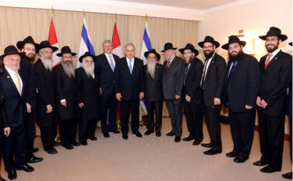

The Prime Minister’s Chabad Delegation
The prime minister of Canada, Mr. Stephen Harper, the greatest political friend of the Jewish people and the State of Israel, recently visited Eretz Yisroel for the first time. Included in his entourage were a dozen shluchim from Canada along with ministers and other public figures. * A member of the delegation, R’ YY Zaltzman, told Beis Moshiach about the special relationship the shluchim in Canada have with the prime minister, about the seventh mitzva of the Noachide Laws, and more.

Media reports about the Canadian Prime Minister, Mr. Stephen Harper’s first trip to Eretz Yisroel, could not help but note the largest group in his entourage – Chabad shluchim. Among them were R’ Yosef Yitzchok Zaltzman, director of the Jewish Russian Community Center in Toronto, who spoke with Beis Moshiach and told us his impressions of this special visit.
“Mr. Harper’s relationship with the shluchim began many years ago, when he was a Member of Parliament in the Calgary district. There, he was in touch with my brother-in-law, R’ Menachem Matusof. Five years ago, to mark twenty-five years of Chabad in Alberta, he attended the special event which was broadcast live on cable stations across Canada. Hundreds of thousands of Jews were thus exposed to pirsumei nisa. In his speech, Harper thanked the Chabad movement for its work throughout the country. He spoke strongly against terrorism and anti-Semitism and promised that as long as he is prime minister he will continue to strongly support Israel. He also attended the inauguration of the Chabad house of R’ Mendel Kaplan.”
Who was behind the invitation to the shluchim to join the Prime Minister’s entourage?
“Once the Prime Minister decided to visit Eretz Yisroel, members of his staff spoke to R’ Chaim Mendelsohn, director of public affairs for the Canadian Federation of Chabad-Lubavitch, and asked him to include some of the shluchim. Since this was a visit to Eretz Yisroel, most of the Prime Minister’s entourage was comprised of Jews – Jewish members of Parliament as well as Jewish leaders.
“Initially it was going to be a small group who would all travel on the Prime Minister’s private plane, but then his staff decided to include more people and invited other shluchim from various parts of Canada. I have a good relationship with some members of Parliament from the Conservative party and apparently they put my name on the list of those to be invited.
“Two weeks before the visit, I received an email with the official invitation from the Prime Minister’s office to join him on the visit. R’ Chaim Mendelsohn and R’ Mendel Kaplan traveled with the Prime Minister on his private plane. The rest of the shluchim flew El-Al and joined the Prime Minister’s entourage in Yerushalayim. We all stayed in the David Citadel Hotel in the Old City.”
PRO-ISRAEL THANKS TO THE SEVEN MITZVOS CAMPAIGN
Mr. Harper was warmly received in the Knesset where he received standing ovations for his speech. He said Canada supports Israel as a Jewish state. He declared that the boycott campaign and de-legitimization of Israel by western countries is “the face of the new anti-Semitism,” by which they attack Jews through criticizing Israel.
Why do you think the leader of your country is so pro-Israel?
“When we were in Eretz Yisroel, I was interviewed by some of the frum radio stations and I said that I think it’s a result of the work of the shluchim in promoting the Seven Noachide Laws. I am certain that when we do the Rebbe’s shlichus and publicize the obligation to fulfill the Seven Noachide Laws, it affects the world. The problem with radical Islam is not just a Jewish problem but that of the entire world. The entire world suffers from them and does not know how to solve the problem. The Rebbe, with the Seven Noachide Laws campaign, provided the solution.”
What connection is there between the Seven Mitzvos and a pro-Israel position?
“The seventh of the seven mitzvos is dinim, i.e. to run the world with just laws. That is what is special about the Canadian Prime Minister. He doesn’t play petty politics, but says what is right and true, even if it’s not politically expedient.
“In his speech in the Knesset he said that Israeli politicians also make mistakes. That’s normal. But when the attacks against them come from Arab states, it is hypocritical. The countries whose moral behavior is the worst in human history, who conduct themselves with absolute anarchy and abrogate the rights of their citizens, they are the ones who dare to preach to Israel?!
“When Shimon and Levi killed the people of Sh’chem, it was because Sh’chem did not keep the seventh mitzva of the Seven Noachide Laws. They saw that an injustice had been done and they kept quiet. That is what is happening today with most of the world’s leaders. But the Prime Minister of Canada does not remain silent in the face of injustice. When the United Nations whitewashes the wicked and castigate the innocent, he stands firmly at Israel’s side and proclaims the truth.
“Where does he get the strength to do this? I am sure it comes from our work in promoting the Seven Mitzvos. It seems we haven’t done enough, which is why, aside from the Canadian Prime Minister and lately Australia too, there are hardly any world leaders who stand up for justice. I am confident that if we continue promoting the Sheva Mitzvos, we will see more heads of state joining the position of justice and standing beside Israel.
“I don’t know why Mr. Harper is unique in this regard at this point, but I can tell you he is a person who thinks, who is consistent, and is an upright individual. He also fights for justice and morality in Canada in many areas that are included within the Sheva Mitzvos B’nei Noach.”
What did you talk about on this visit?
“When all of us shluchim were photographed along with Mr. Harper and Netanyahu, we pleaded with the Netanyahu to stand strong and not give away parts of Eretz Yisroel. We reminded Netanyahu about what the Rebbe told him that the UN is a place of darkness and his job is to illuminate it. ‘You’ll be serving in a house of many lies,’ the Rebbe said to him. ‘Remember, that even in the darkest place, the light of a single candle can be seen far and wide.’ Netanyahu told us that in his first meeting with Mr. Harper he told him what the Rebbe said.
“At the dinner for the Jewish National Fund (Keren Kayemet), which was attended by both prime ministers, Netanyahu reminded Harper about what the Rebbe said about illuminating the UN and said to him, ‘When you spoke in the Knesset you lit a great light!’
“Mr. Harper replied: Words alone are not enough; action has to be taken so that the darkness is illuminated.
“Netanyahu so enjoyed Harper’s practicality that he smilingly said: He’s already a Lubavitcher.”
“During the visit, the close relationship between Harper and the shluchim was apparent. When the shliach in Calgary, R’ Matusof, was introduced to Harper as the ‘rabbi of Calgary,’ Harper said, ‘He’s my rabbi.’ Harper knew some of the shluchim by first name, which surprised rabbis from other groups who were part of the entourage but not close with the prime minister.
“A group picture was taken with the shluchim and the prime ministers at the conclusion of which a set of the Five Books of the Torah with the Rebbe’s explanations translated into English (published by Kehos) was given to Harper. When Harper saw that it was in English, he smiled and said, ‘It’s good that it’s in English so I can study them.’
“Last year, I participated in a delegation of shluchim who visited him and we awarded him the title ‘Man of the Year’ and gave him Simon Jacobson’s book, Toward a Meaningful Life. One of my mekuravim, who works in Harper’s office, told me that he saw him reading the book on a number of occasions.
“Before we stood up for the group picture, I spoke with Harper about the enormous impact of his visit and he shared his feelings with me. He said that he had been so busy he had not had the time to read the Canadian newspapers, but his wife had told him what they reported. Most of them were positive but some were negative and in most of them, said Harper, you could see the anti-Semitism behind what was written. ‘It greatly pains me that in my country there are people with such anti-Semitic views.’”
NOTES FROM THE TRIP
R’ Zaltzman shared some tidbits from the visit. At the meals served to the Chabad delegation at the hotel, they were given meat with Lubavitcher sh’chita, straight from Kfar Chabad, thanks to the fact that the kashrus supervisor of the hotel is a Lubavitcher Chassid.
In the morning, when looking for the nearest mikva, we met a nice man in the Old City by the name of Matityahu Dan who was happy to meet shluchim of the Rebbe. He showed us a letter he received from the Rebbe in 5739 (see photocopy) in which the Rebbe wrote about the significance of the Old City, at the end of which is a fascinating reference to the Laws of Melech HaMoshiach in the Rambam.
“In conclusion,” said R’ Zaltzman, “this visit demonstrated how close we are to the hisgalus of the Rebbe MH”M, when leaders of nations realize that we need to promote justice and truth and ensure the security of the Holy Land. This visit gave us the feeling of ‘and kings will be your nursemaids.’ I am sure that if we – the shluchim – make more of an effort to carry out the Rebbe’s mivtzaim, including the Sheva Mitzvos B’nei Noach – the entire world will recognize this.
Beis Moshiach (staff). "The Prime Minister’s Chabad Delegation." Beis Moshiach, no. 914 (February 6, 2014).